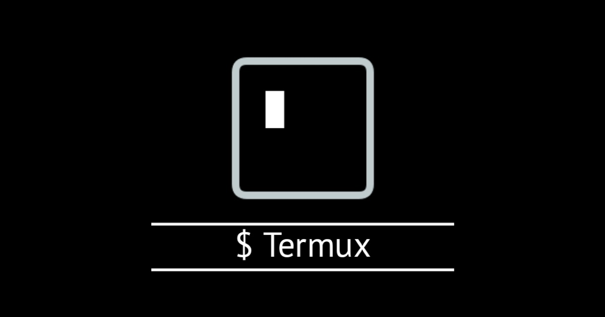
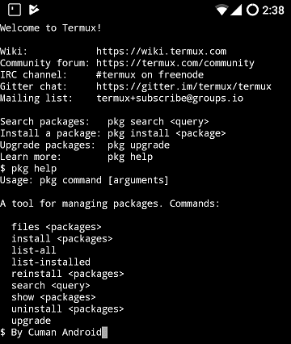
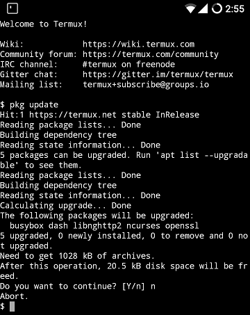
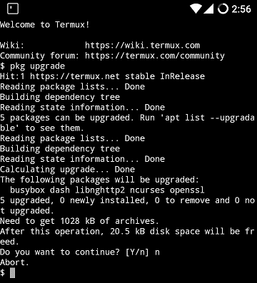
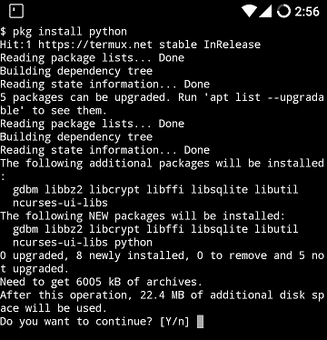
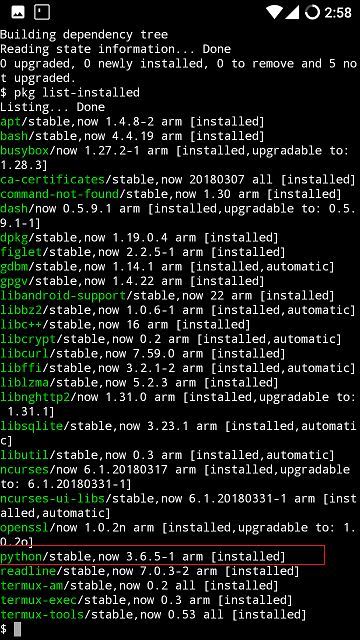

<{\_$(A)$_/}>
TUTORIAL TERMUX
Cara Menggunakan Termux untuk Pemula, Part 1 : Pemasangan dan Penggunaan [GUIDE] Cuman Android 4:54 PM

Cara Menggunakan Termux untuk Pemula, Part 1 : Pemasangan dan Penggunaan [GUIDE] - Hallo sobat, akhirnya setelah sekian lama vakum, saya bisa hadir lagi untuk berbagi tutorial kepada kalian, senangnya :). Cara Menggunakan Termux untuk Pemula, Part 1 : Pemasangan dan Penggunaan [GUIDE]
Ok, sesuai judul saya ingin berbagi ilmu cara menggunakan aplikasi termux,
dan yang paling pertama, sobat harus tau dulu nih apa itu termux, supaya nanti sobat tidak keder sendiri, hehehe.
Nah kalo menurut pengertian dari website termux.com, aplikasi tersebut memiliki deskripsi seperti ini :
Termux is an Android terminal emulator and Linux environment app that works directly with no rooting or setup required.
Terjemahan:
Termux adalah aplikasi android terminal dan linux environtment yang dapat berjalan
tanpa membutuhkan root sama sekali.
Nah dengan kata lain aplikasi ini dapat memberikan akses seperti terminal pada umumnya,
dan sobat bisa menggunakan linux di dalam aplikasi ini.
Dan ini lah yang membedakan termux dengan terminal lain, maka dari itu sayang
banget deh kalo aplikasi gacor yang satu ini gk di pelajarin.
Nah kenapa saya bilang gacor ??? Karena dengan aplikasi ini sobat tidak hanya bisa menginstall linux,
tapi juga bisa melakukan beberapa hal seperti hacking, defacing, atau meng-attack sebuah organisasi di internet,
lalu bisa juga memasang beberapa bahasa pemograman, seperti Python, dan C Lang, kemudian kalian juga bisa memasang distro linux, contohnya seperti kali linux.
Jadi gacor banget kan aplikasi termux ini ??? Tanpa pc pun sobat bisa melakukan itu semua ??????.
Ok saya rasa, cukup perbincangan singkatnya, dan langsung aja saya mulai cara pemasangan termuxnya.
Cara Menggunakan Termux untuk Pemula : Tahap Pemasangan dan Penggunaan
Sebelum memulai, kita perlu ingat kalau termux itu sebuah terminal, maka perlu memasukan command atau perintah.
Nah terminal untuk android itu kan berjalan di atas UNIX/LINUX, otomatis kita perlu menggunakan perintah dasar yang ada di linux seperti mv, mkdir, sh, cp, echo, clear, dan sebagainya.
Dan karena di android ada beberapa perintah dasar yang kurang, saya sarankan sobat memasang busybox, khususnya bagi sobat yang ingin lebih memperdalam termux.
Ok semua sudah siap, kita mulai saja.
#1. Buka Google Playstore > ketik Termux di pencarian > pilih aplikasinya, kemudian install, dan Pastikan buatan Fredick Fornwall.
#2. Nah setelah di install, sobat bisa membuka termuxnya, maka akan terlihat perintah dasar pada aplikasi termux, yaitu :
pkg search
pkg install
pkg upgrade : untuk mengupgrade package
pkg help : untuk menampilkan perintah tambahan
Nah sampai sini sobat bisa ketikan perintah pkg help untuk menampilkan seluruh perintahnya :
pkg help
Lalu enter, maka akan muncul perintah tambahannya :

Cara Menggunakan Termux untuk Pemula, Part 1 : Pemasangan dan Penggunaan [GUIDE] By Luchifer id
file
install
list-all : untuk melihat package yang sudah terpasang
list-installed : untuk melihat package yang baru di pasang
show
uninstall
upgrade : untuk mengupgrade package
Nah sampai di sini, kita sudah tau beberapa perintah dasarnya, dan sekarang saya mau sobat menjalankan beberapa perintah pada termux.
#1. Mari kita jalankan perintah update, caranya ketikan :
pkg update
lalu tekan enter, kemudian ketik y lalu enter lagi, maka termux akan melakukan update terhadap package.
Atau ketik n lalu enter untuk membatalkan proses
Contoh gambar :

Cara Menggunakan Termux untuk Pemula, Part 1 : Pemasangan dan Penggunaan [GUIDE] By Cuman Android
#2. Jalankan Perintah upgrade, caranya ketikan =
pkg upgrade
Lalu tekan enter, kemudian ketik y lalu enter lagi, maka termux akan melakukan upgrade.
Atau
Ketik n lalu enter untuk membatalkan proses.
Contoh :

Cara Menggunakan Termux untuk Pemula, Part 1 : Pemasangan dan Penggunaan [GUIDE] By Luchifer id
#3. Jalankan perintah clear untuk membersihkan layar, caranya ketikan =
clear
Lalu tekan enter, maka layar akan bersih seketika
Nah itu adalah perintah dasar termux yang sudah kalian lakukan untuk melakukan update dan upgrade.
Tahap Pemasangan Package di Termux
Package
adalah sebuah paket yang berisi instalasi sebuah aplikasi atau software
Sekarang kita lanjut ke tahap memasang package, dan caranya itu seperti ini :
#4. Ingat, untuk memasang package bisa menggunakan pkg install
menggunakan apt-get install
Selanjutnya kita akan coba memasang bahasa pemograman python, dan silahkan ikut langkah di bawah ini :
Pertama ketikan perintah ini :
pkg install python
lalu enter dan ketikan y lagi lalu enter, maksud y adalah untuk membolehkan program memasang package, kemudian tunggu sampai selesai.
Contoh :

Cara Menggunakan Termux untuk Pemula, Part 1 : Pemasangan dan Penggunaan [GUIDE] By Luchifer id
Jika sudah selesai, kita perlu memasikan kalau bahasa pythonnya sudah terpasang, dan hal selanjutnya yang perlu kita lakukan adalah menggunakan perintah list-installed, dan cara menggunakannya seperti ini :
Pertama ketikan perintah ini :
pkg list-installed
Lalu enter, maka akan muncul package yang baru di pasang, dan sobat bisa cari python di situ, kalau ada maka pythonnya sudah berhasil ke pasang.
Contoh :

Cara Menggunakan Termux untuk Pemula, Part 1 : Pemasangan dan Penggunaan [GUIDE] By Luchifer id
Nah kurang lebih seperti itu lah tahap awal pada guide part-1 kali ini, semoga bisa bermanfaat dan harap gunakan termux dengan bijak.
Sampai bertemu di guide selanjutnya sob :).
Beberapa package penting yang perlu sobat install :
A. Github/GIT : pkg install git
B. Bahasa C Lang : pkg install clang
C. Bahasa Python2 : pkg install python2
Email : rafli.andhika17@gmail.com"
WA : +62-882-183-93373
2019 @ Luchiferid.Web.id